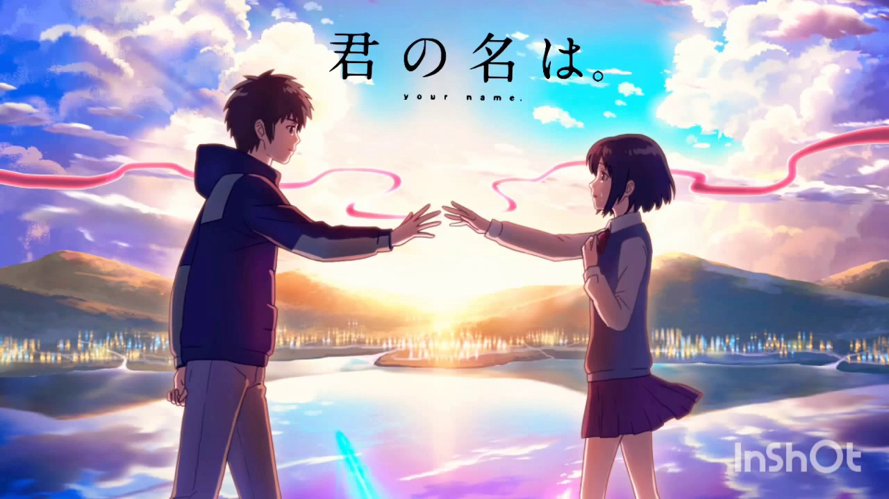
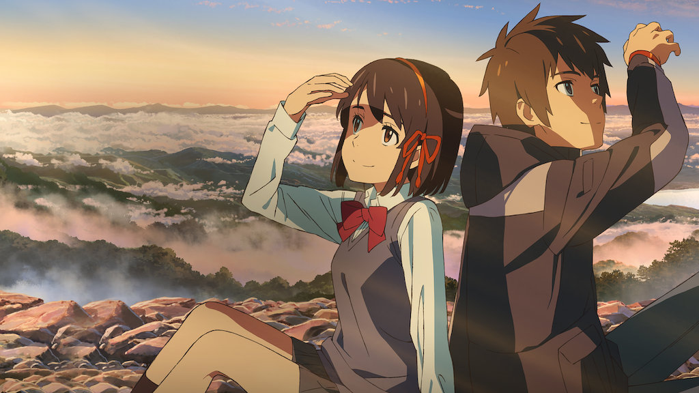

YOUR NAME
PAISAJES
Kimi no Na wa. (君の名は。 lit. Tu nombre es?) es una película de animación japonesa estrenada en 2016; escrita y dirigida por Makoto Shinkai, animada por CoMix Wave Films y distribuida por Tōhō.2 La película está inspirada en la novela del mismo nombre escrita por Shinkai que fue publicada el 18 de junio de 2016.34 Masayoshi Tanaka fue el diseñador de personajes y la banda japonesa Radwimps compuso la música de la película. Se estrenó en la convención Anime Expo 2016 en Los Ángeles el 3 de julio de 2016 y más tarde se estrenó en Japón el 26 de agosto del mismo año.567 En la Anime Expo 2016 también se anunció que la película había sido licenciada por Funimation.8 Su estreno europeo fue durante el Festival Internacional de Cine de San Sebastián, el día 22 de septiembre de 2016.910 Selecta Visión adquirió los derechos para distribuirla en España a partir de enero de 2017. Por su parte, KEM Media adquirió los derechos de distribución para Latinoamérica desde agosto del mismo año. Los protagonistas, Taki y Mitsuha, son dos completos desconocidos, y a pesar de eso están destinados a conocerse. Durante el sueño, ambos adolescentes intercambian sus cuerpos, con resultados impredecibles en la vida de ambos.11Mitsuha es una joven de pueblo que anhela la emoción de la vida de la ciudad. Un día, sueña con un chico tal y como desea, al mismo tiempo que el chico en cuestión, Taki, de la gran ciudad, sueña a su vez con Mitsuha, una encantadora chica del campo. Taki y Mitsuha descubren un día que durante el sueño sus cuerpos se intercambian, y comienzan a comunicarse por medio de notas. A medida que consiguen superar un reto tras otro, se va creando entre los dos un vínculo muy especial. La inconveniencia sucede cuando ambos, tras saber su conexión especial por lazos temporales (que suceden por medio de los sueños), descubren un enorme deseo de querer conocer al otro.
PROTAGONISTAS
Mitsuha Miyamizu
Mitsuha Miyamizu (宮水 三葉 Miyamizu Mitsuha) es una adolescente de 17 años {llegada del cometa} 25 {8 años después del cometa 21 filas más que vive en un pequeño pueblo rural llamado Itomori. Ella forma parte del santuario de su familia y participa en viejas tradiciones al ser una doncella del santuario con su hermana menor. La aversión a su ciudad natal, los problemas con el santuario de su familia y los problemas con su padre hacen que Mitsuha quiera vivir como un chico guapo en Tokio. Su deseo eventualmente le sería parcialmente otorgado, ya que ella comenzaría a cambiar de cuerpo con Taki Tachibana.
Taki Tachibana
Taki Tachibana (立花 瀧 Tachibana Taki) es un adolescente de 17 años que vive en la ciudad de Tokio. En su vida diaria, pasa el tiempo al lado de sus amigos y trabaja en un restaurante italiano, con la esperanza de un futuro en la arquitectura al mismo tiempo. Su estilo de vida ocupada toma un giro cuando comenzó a cambiar de cuerpo con una chica que vive en el campo rural, llamada Mitsuha Miyamizu, que deseaba vivir como un chico guapo en Tokio.
SUGA SHRINE
Suga Shrine (須 賀 神社, Suga jinja) es un santuario sintoísta ubicado en Shinjuku, Tokio. La escalera que conduce a ella aparece en Your Name.
Historia
En el período Edo, el santuario Suga fue originalmente el santuario de Gozutennou y el santuario de Inari. Después de la Restauración Meiji, se consagraron juntos para convertirse en el Santuario Suga.
En Your Name
La escalera del santuario aparece al final de la película, en la que Taki Tachibana y Mitsuha Miyamizu se encuentran fatídicamente por primera vez físicamente.

ISLA AOGASHIMA
Aogashima (青 ヶ 島村, Aogashima-mura) es un pueblo ubicado en la subprefectura de Hachijō, metrópolis de Tokio, Japón. Al 1 de octubre de 2018, la aldea tenía una población estimada de 169 y una densidad de población de 28,2 personas por km2. Su superficie total es de 5,96 kilómetros cuadrados (2,30 millas cuadradas).
Historia
No se sabe cuándo comenzaron los asentamientos humanos en Aogashima, pero se sabía que la isla estaba habitada a principios del período Edo, y se menciona en los registros históricos mantenidos por el shogunato Tokugawa en Hachijōjima. Durante una gran erupción volcánica en 1785, pereció un gran número de isleños y el resto fue evacuado a Hachijōjima. Un censo de 1835 informó 241 habitantes (133 hombres, 108 mujeres), la mayoría dedicados a la pesca. El 1 de abril de 1940, la isla quedó bajo la jurisdicción administrativa de la subprefectura de Hachijō. La población se concentra en dos caseríos; Yasundogō (休 戸 郷) en el este y Nishigō (西 郷) en el oeste.
En Your Name
La Isla es el lugar de recidencia de Mitsuha Miyamizu en el que pasa toda su vida y el cual es en el que cae un meteorito gigante

LAGO SUWA
El lago Suwa (諏 訪 湖, Suwa-ko) es un lago en las montañas Kiso, en la región central de la prefectura de Nagano, Japón.
Historia
El lago Suwa alberga dos santuarios importantes, el Tenaga Jinja y el Suwa Jinja. Los principales festivales incluyen Onbashira y Setsubun. Una vista del monte Fuji al otro lado del lago Suwa (Shinshū Suwako), de la serie Treinta y seis vistas del monte Fuji (Fugaku sanjūrokkei) Hokusai incluyó el lago Suwa en su famosa serie de grabados en madera de Treinta y seis vistas del monte Fuji (Fugaku sanjūrokkei). [7]
En Yor Name
fue utilizado como el lago simbólico en Itomori. Es un lugar importante para Mitsuha y Taki para descubrir la verdad.